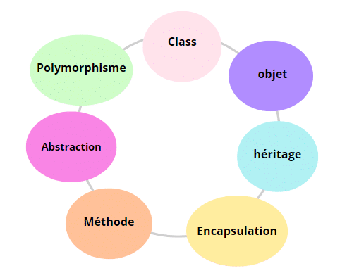

1.Qu'est-ce que la programmation orientée objet ?
La programmation orientée objet (POO) est une méthode de conception et de développement de logiciels qui se base sur l’utilisation d’objets. Chaque objet est une instance d’une classe, qui est comme un modèle ou un plan de fabrication. Les objets peuvent contenir : Des propriétés (ou attributs) qui définissent leurs caractéristiques. Des méthodes (ou fonctions) qui définissent leur comportement. L’idée principale est de structurer ton programme autour des objets qui interagissent entre eux, ce qui rend ton code plus clair, réutilisable et facile à maintenir.
2.Les concepts fondamentaux de la POO
2.1Classe et objet
- Classe: Une classe est comme un modèle qui définit un type d'objet. Elle spécifie ce qu’un objet de ce type peut contenir comme propriétés et quelles actions il peut accomplir via ses méthodes.
- Objet: Un objet est une instance d’une classe. Si la classe est un plan, l’objet est le produit final. Par exemple, si tu as une classe Chien, un objet pourrait être un chien spécifique appelé "Rex".
2.2/ Encapsulation
L'encapsulation est le mécanisme qui permet de cacher l'état interne d'un objet et d'exposer uniquement ce qui est nécessaire via des méthodes publiques. Cela protège les données et permet de les modifier uniquement par des méthodes appropriées.
2.3/ Héritage
L’héritage permet à une classe de « hériter » des propriétés et méthodes d’une autre classe. Cela permet de créer des classes plus spécifiques à partir de classes plus générales. L’héritage favorise la réutilisation du code et simplifie la gestion des différentes catégories d’objets.
2.4/ Polymorphisme
Le polymorphisme permet de traiter les objets de manière générique. Par exemple, une méthode peut accepter des objets de types différents (qui héritent d'une même classe de base), mais agir différemment selon le type réel de l'objet.
2.5/ Abstraction
L’abstraction consiste à masquer les détails complexes d’un objet et à ne montrer que ce qui est nécessaire. Cela permet de simplifier l’utilisation des objets sans s'occuper de leurs détails internes.
3.Premier programme en POO : "Hello, World!"
En Java, même le plus simple des programmes peut utiliser les concepts de la programmation orientée objet (POO). Voici un exemple de base avec une classe, un objet et une méthode pour afficher "Hello, World!" à l'écran.

Explication du code
Classe HelloWorld:
En Java, tout code doit être contenu dans une classe. Ici, la classe s'appelle HelloWorld.
Méthode direBonjour() :
À l'intérieur de la classe, on a une méthode nommée direBonjour() qui affiche le texte "Hello, World!" sur l'écran lorsque nous l'appelons.
Méthode main() :
La méthode main() est le point d'entrée du programme en Java. C'est ici que le programme commence à s'exécuter.
Création d'un objet monObjet :
Dans la méthode main(), nous créons un objet monObjet de la classe HelloWorld en utilisant new HelloWorld(). Ensuite, nous appelons la méthode direBonjour() sur cet objet pour afficher "Hello, World!".